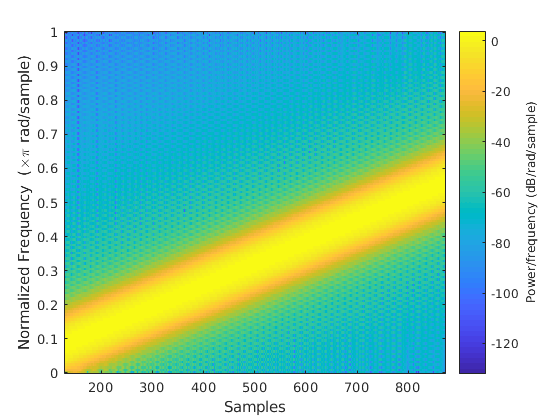
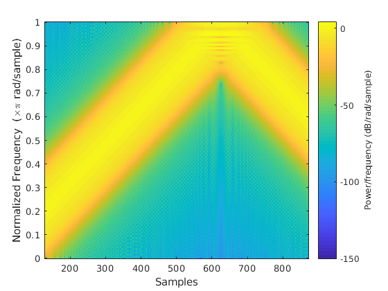
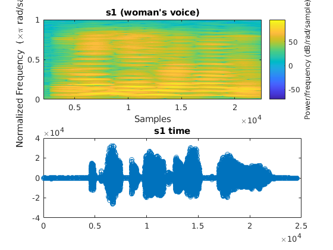
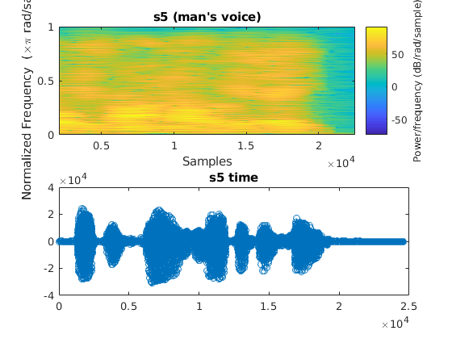
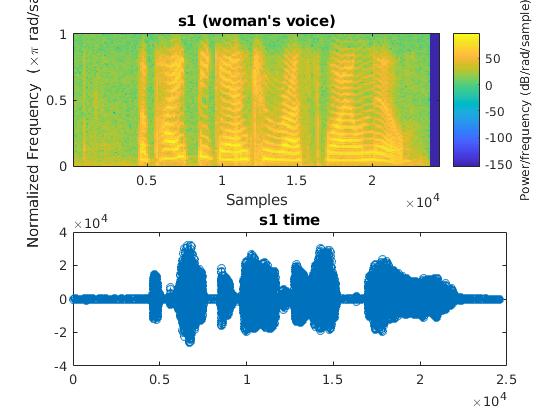
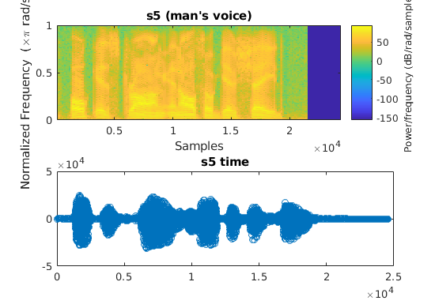
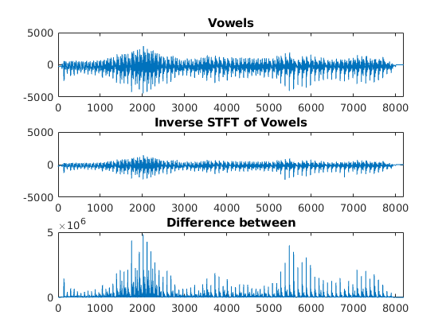
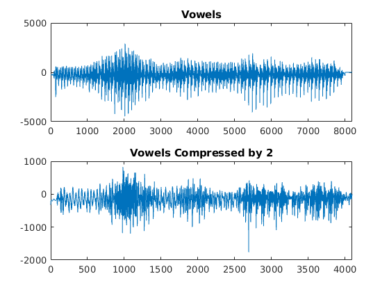

Spectrogram Analysis and Applicaitons
Nikola Janjusevic
% 1. Frequency Modulated Signals fs = 5e6; t0 = 200e-6; u = 4e9; t = 0:1/fs:t0; x = cos(2*pi*u*t.^2); figure; spectrogram(x,triang(256),255,'yaxis'); % 2. Inst Freq: f1 = u*t; f2 = 2*u*t; inst_freq1 = f1(end)/(fs/2) inst_freq2 = f2(end)/(fs/2) % 3. u2 = 1e10; x2 = cos(2*pi*u2*t.^2); figure; spectrogram(x2,triang(256),255,'yaxis'); % the second chirp has a faster rate and thus a % steeper slope on the spectrogram
inst_freq1 =
0.3200
inst_freq2 =
0.6400
  load('s1.mat'); load('s5.mat'); % 4. High Frequency Resolution L = 2^12; ol = L-1; N = L; figure('name', "s1 High Frequency Resolution"); subplot(2,1,1); spectrogram(s1,triang(L),ol,N,'yaxis'); title("s1 (woman's voice)"); subplot(2,1,2); stem(s1); title("s1 time"); figure('name', "s5 High Frequency Resolution"); subplot(2,1,1); spectrogram(s5,triang(L),ol,N,'yaxis'); title("s5 (man's voice)"); subplot(2,1,2); stem(s5); title("s5 time"); 
load('s1.mat'); load('s5.mat'); % 5. High Temporal Resolution L = 2^8; ol = L/2; N = L; figure('name', "s1 High Temporal Resolution"); subplot(2,1,1); spectrogram(s1,triang(L),ol,N,'yaxis'); title("s1 (woman's voice)"); subplot(2,1,2); stem(s1); title("s1 time"); figure('name', "s5 High Temporal Resolution"); subplot(2,1,1); spectrogram(s5,triang(L),ol,N,'yaxis'); title("s5 (man's voice)"); subplot(2,1,2); stem(s5); title("s5 time"); 
close all; %6. Inverse STFT load("vowels.mat"); N = 1024; L = 256; ol = 128; % padding to a power of 2 p = nextpow2(length(vowels)); vowels = padarray(vowels,2^p-length(vowels),0,'post'); [S,F,T] = spectrogram(vowels,rectwin(L),ol,N,'yaxis'); x = istft(S,L,ol,N); figure('name','Part 6: Modified STFT'); subplot(3,1,1); plot(vowels); xlim([0 2^13]); ylim([-5000 5000]); title("Vowels"); subplot(3,1,2); plot(x); xlim([0 2^13]); ylim([-5000 5000]); title("Inverse STFT of Vowels"); subplot(3,1,3); plot((vowels.'-x(1:length(vowels))).^2); xlim([0 2^13]); title("Difference between"); % 7 Change of Rate S3 = downsample(S.',2); S3 = S3.'; x3 = istft(S3,L,ol,N); figure('name','7: Change of Rate'); subplot(2,1,1); plot(vowels); xlim([0 2^13]); ylim([-5000 5000]); title("Vowels"); subplot(2,1,2); plot(x3); xlim([0 2^12]); title("Vowels Compressed by 2"); % Inverese STFT function function x0 = istft(S,L,ol,N) % mirror S making it 1024 point from 512 n = length(S(:,1)); c = length(S(1,:)); S2 = zeros(N,c); S2(1:n,:) = S(1:n,:); S2(n-1:end,:) = S(end:-1:1,:); X = ifft(S2,N,1); x0 = zeros(1,(c+1)*ol); for i=1:c index = (i-1)*ol+1; x0(index:index+L-1) = x0(index:index+L-1) + real(X(1:L,i).'); end x0(ol+1:end-ol) = x0(ol+1:end-ol)*0.5; x = x0; end 